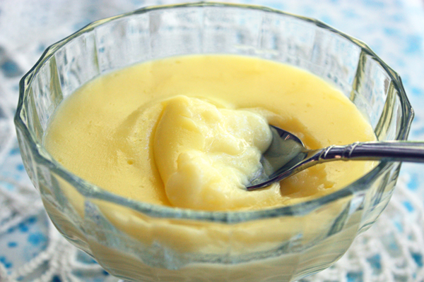

Custard Pudding

Description
This simple recipe makes the most amazing custard. It thickens as it cools. In some countries, cornstarch is called corn flour. My (American) cornstarch has a very fine powdery texture, resembling powdered sugar. - Jenny Jones
Ingredients
- 1/2 cup sugar (works with 1/3 cup)
- 2 Tablespoons cornstarch (not corn flour)
- 2 cups milk (whole milk or low fat)
- 2 egg yolks
Steps
- In a medium saucepan, combine the sugar & cornstarch.
- Slowly whisk in the milk & egg yolks.
- Place over medium heat and bring to a boil. Cook about 1 minute, stirring constantly, until thickened. (it will thicken more as it cools)
- Pour into serving cups and let stand to cool or refrigerate, UNDISTURBED, until it’s set – about an hour.